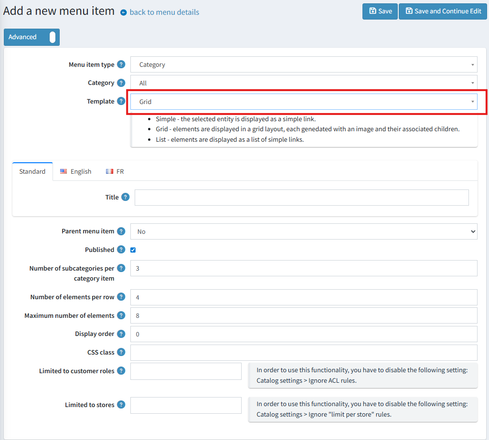

Mega Menu
Starting with version 4.90, the main menu and the footer navigation can be fully customized by the administrator in the admin panel.

Accessing Menu Management
To manage menus, navigate to Content management -> Menus. From this page, you can either edit an existing menu or create a new one.

Creating and Managing Menus
When creating a new menu, you must specify its location using the Menu type:
- Main menu: The primary navigation bar.
- Footer: The navigation links in the site's footer.

Warning
While you can create multiple Main menu instances, only one will be displayed on the storefront at any given time, determined by its availability and creation order.
The 'Display all categories' setting automatically generates top-level menu items based on your store's categories and their sub-categories. If this checkbox is enabled, these category links will appear before any manually created menu items.
After a menu is successfully created, you can begin adding items to it.

Adding and Configuring Menu Items
The following parameters are available when creating or editing a menu item.

Warning
For menus with the Footer type, the 'Parent menu item' property is unavailable, as footer navigation supports only a single level with no nesting.
Menu Item Type
This parameter determines the behavior and available settings for the menu item.

- Standard page: Links to a predefined system page with a pre-configured route.
- Category:
- Display all categories (in a grid or list layout).
- Display a single category (as a grid, list, or simple link).
- Display all categories (in a grid or list layout).
- Manufacturer:
- Display all manufacturers (in a grid or list layout).
- Link to the "All manufacturers" page.
- Link to a specific manufacturer's page.
- Product: Links directly to a selected product page.
- Vendor:
- Display all vendors (in a grid or list layout).
- Link to the "All vendors" page.
- Link to a specific vendor's page.
- Topic (page): Links to a selected topic page.
- Custom link: A simple link where you manually specify the Text and URL.
- Text without link: Displays non-clickable text. This is useful for parent-level items that serve as headers and do not need to link anywhere.
Additional Settings for Grid/List Layouts
For menu items that use a grid or list template (e.g., displaying all categories), the following options are available:
- Number of elements per row (grid): Sets the maximum number of items to display in a single row of the grid.
- Number of subcategories per category item (grid): Sets the maximum number of sub-category links to display within each grid tile.
- Maximum number of elements: Sets the total maximum number of child items to display.
